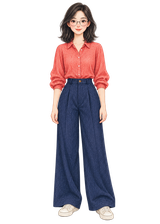
HIGH FITProject 003 身份锚点
透明、正面、全身、单角色；进入真实 Rig 测试。
UPSTREAM EVIDENCE
真实能力外观
以下媒体均为上游 MIT 仓库发布证据。它们证明端到端工作区曾产出这些动画和资产，但不证明任意角色、任意 Provider 的稳定成功率。
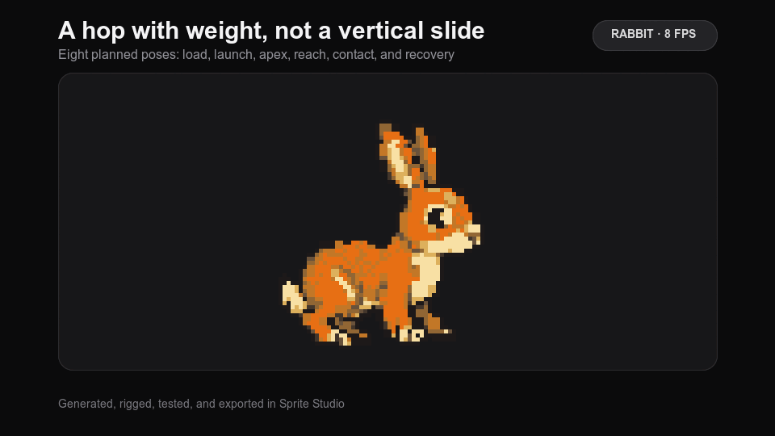
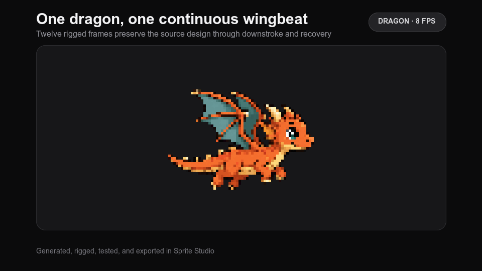
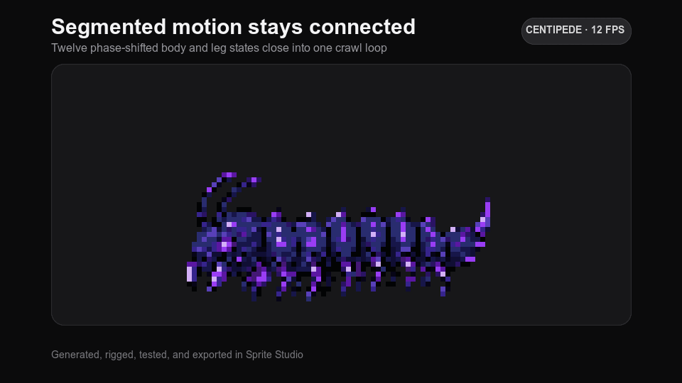
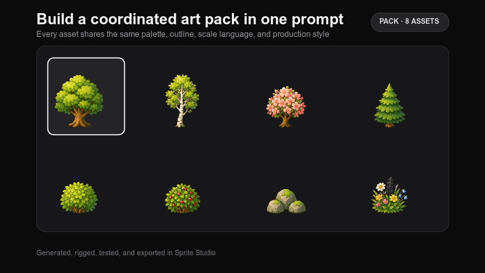
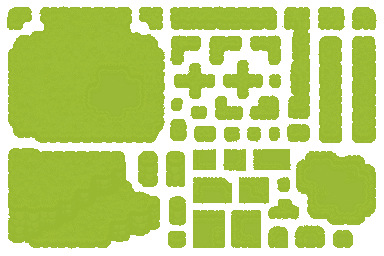
OWN-SAMPLE TEST
Project 003 × Sprite Studio v0.3.2
在 Windows 上启动固定提交的 Tauri 应用，导入 Project 003 身份锚点；一次 Codex 视觉调用只建议骨架，四帧像素由 Rust 本地渲染。本次 ImageGen 调用为 0。
轻微 idle 有条件通过；不批准 walk / run。
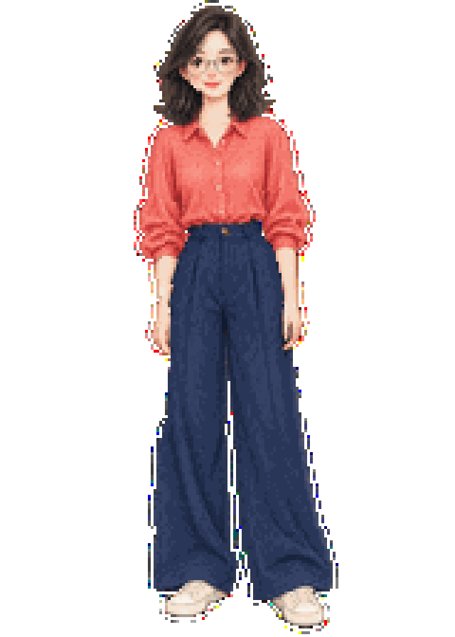
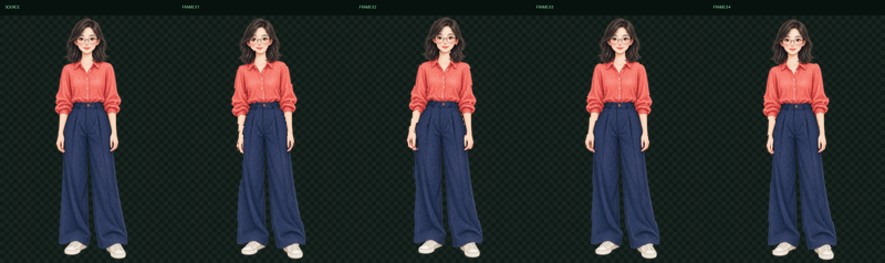
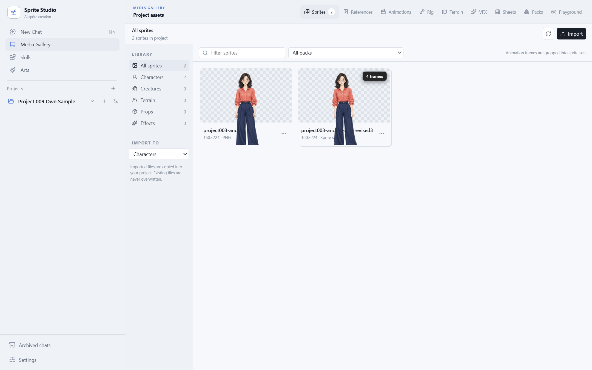

透明、正面、全身、单角色；进入真实 Rig 测试。
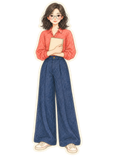
手臂与躯干互相遮挡，宽裤腿隐藏膝点；保留作后续困难集。
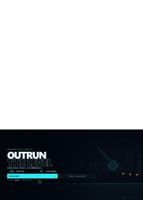
不是独立透明角色，输入门禁直接拒绝，不用漂亮分数掩盖错误任务。
肩跨度仅 7px、手跨度 17px；膝点在宽裤遮挡下仍给 0.97，快速但过度吸附身体中轴。
肩跨度 36px、手跨度 57px；被遮挡膝点降到 0.25，更符合可见人体与真实不确定性。
视觉规划的 0.1–0.3° 动作太保守，低于本地有效动作阈值。
只把双臂提高到 ±4° 仍不够：biped 躯干没有有效运动。
双臂与上躯干反向 ±4°；脚保持着地，四帧写入工作区。
再次渲染的四个文件哈希逐一相同，证明相同 master + Rig 可复现。
USE-CASE DEMO
合理使用场景
同一个已确认 master 经过一次 Rig，可以进入角色选择、NPC 对话、商店或任务面板等低幅度待机场景；文件、版本和 QA 仍然可追溯。真正需要位移的战斗动作则必须重新准备素材和验证。
城市观察者 · Asset v1 · Idle r1
“车站的灯每隔七秒闪一次。等下一次熄灭，我们再过去。”
同一 4-frame idle 被复用；对话文字和状态属于游戏层。角色选择、NPC 对话、商店和任务面板共享同一 master 与 idle，不必为每个界面重新生图。
Rig schema、动作门禁、确定性复渲染和人工审核让失败有明确原因，也让结果可以回退。
帧、FPS、循环、pivot、版本和 QA 一起交付，游戏代码只负责播放和状态切换。
PLAYABLE SCENE
真实资产 × 游戏代码
Revision 5 已冻结保存。主路由进入 Revision 6：激活 Rig 后，林简动作投影会使用真实 run-v2 跟随玩家，并在发射脉冲时切换真实 pulse-cast-v1；QA 和 Export 继续说明它为什么仍是有条件采用。
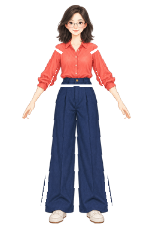
林简投影 · RUN V2“恢复 Rig、QA、Export 三个终端，再到最右侧启动信标。”
native idle 与版本化 helper 动作均为真实输出；run-v1 被保留，run-v2 不覆盖旧版本。
Canvas 决定何时播放 run/cast，但不生成角色帧；故障体、命中、检查点和信标属于演示代码。
证明它适合作为资产生产环节进入更复杂运行时，而不是替代游戏引擎或自动生成完整玩法。
COMBAT TRIAL
新增试运行模块
这是独立模块，不覆盖 Revision 6 能力关卡。它用同一组真实 master / run-v2 / cast-v1 证明资产状态可以进入更复杂的战斗合同。
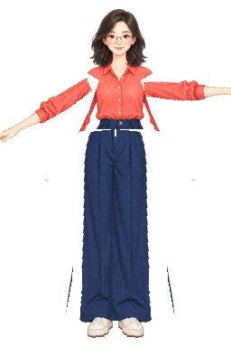
林简投影 · CAST V1角色像素、动作帧和版本来自多动作实验。
敌人 AI、伤害、护盾、闪避、同步与胜负属于游戏代码。
关键波次、Boss、失败和完成态可以直接复核。
批准复杂状态接入，不批准生产级人体 locomotion。
APPLICATION LAB
ONE ASSET / FIVE PRODUCTS
这是独立的应用场景实验室：桌面伙伴、互动故事/数字展厅、教学演示、营销动态人物和低成本游戏原型都能实际切换状态，并共享同一组真实 master / run-v2 / cast-v1。

角色身份、透明帧、动作顺序和版本来自真实实验输出。
提醒完成映射 cast；移动到展品映射 run。
这些逻辑必须根据具体产品需要单独构造。
证明动作资产可跨产品复用，不把库描述成完整业务引擎。
CAPABILITY LAB
Project 009 研究模拟
实验台不调用模型，也不生成图片；它根据固定源码路径解释四类任务的执行边界与交付物。
选择准确的 PNG、尺寸、FPS、风格和动画意图。
返回关节点、胶囊骨骼、层级、关键姿势和接触点。
使用权重网格和父子变换生成确定性 Rig-only 帧。
失败修复写入新版本，不覆盖源资产。
帧、时间线、pivot、质量报告和 Manifest 留在工作区。
平面像素变形可能在大角度关节处拉伸；复杂新视角仍需重绘。
当前为 Rig-only：动作帧不需要逐帧调用图像模型。
HOW IT WORKS
实现原理
这条分工线比“用了哪个模型”更重要：它决定资产能否复现、修复、回退和进入游戏。
对话、参考图和设置被编译成角色、怪物、道具、VFX、Pack 或 Terrain 合同。路由同时使用命令、关键词和当前资产上下文。
不确定：理解、构图、源图与可选润色walk、run、attack、cast、death 等关键词进入预定义阶段；自动模式可让 Agent 看图后推荐帧数。
混合：规则骨架 + 视觉建议最近骨骼兜底保证完整轮廓；最多四骨骼权重、父子仿射变换和解析式双骨 IK 生成帧。
确定性：相同输入得到相同渲染尺寸、Alpha、边缘、质心、感知哈希、调色板、帧差和循环首尾差异构成诊断报告。
边界：不能替代身份、肢体和审美判断PNG、Sheet 和 JSON 留在项目目录；对话、版本、时间线、任务与报告进入 SQLite，并支持备份恢复。
Local-first：拥有资产，不代表云端生成完全离线原生核心不是单文件脚本。
覆盖项目、对话、资产、Rig、QA、导出与恢复。
包括时间线、Rig、浏览器、Pack、Terrain 与 Playground。
AI 创造、本地计算、文件所有权。
SCENARIOS
使用场景
它的优势来自工作流完整性，而不是单张图的绝对上限。只做一次性图片时，直接使用图像工具更简单。
VALUE TO US
对我们的意义
不必照搬整个应用；真正值得迁移的是 Harness、确定性后处理、Artifact + Manifest 与人机验收闭环。
已有完整 Canvas 玩法、种子化关卡和测试接口；缺少可持续角色、障碍和 VFX 资产生产层。
查看项目 →提供 Sprite、Rig、动画、QA、版本和游戏导出；不替代玩法或角色身份治理。
补齐“可动画工作台”已有身份锁、风格锁、三轴版本、lineage 与文件级 QA；缺少动作时间线和游戏资产导出。
查看项目 →OUR OPPORTUNITY 身份与风格治理 × 可重复动画 × 游戏交付合同 = 长期 Character Asset Workbench
把普通需求转换为分类、规格、帧数、质量门禁和交付合同。
模型负责创造，代码负责可以重跑、比较、修复和回退的部分。
生成结果不是聊天附件，而是有身份、路径、版本和来源的项目资产。
自动指标负责发现异常，人负责确认身份、动作可读性和最终艺术质量。
EXTENSIONS
可扩展方向
最有价值的扩展不是继续增加按钮，而是让生产结果更可验证、更容易进入真实游戏。
提供 schema migration、能力探测、兼容性测试和清晰的失败合同，降低早期版本快速变化带来的维护成本。
让固定资产清单能够在不打开桌面 UI 的情况下生成、检查、导出和回归；补齐 Windows Python 命令探测。
附带 hitbox、hurtbox、攻击事件、脚步、root motion、状态机和示例播放器，而不只交付通用 Sheet。
把角色卡、武器、服装、调色板、4/8 方向动作和动作版本组织成可复用角色资产图。
在像素指标之外，建立固定角色和动作基准，测首次通过率、返工率、耗时、成本和下游可用率。
加入评论、客户确认、失败帧重做、Provider provenance、许可证记录、缓存、队列和正式发布审批。
FINAL VERDICT